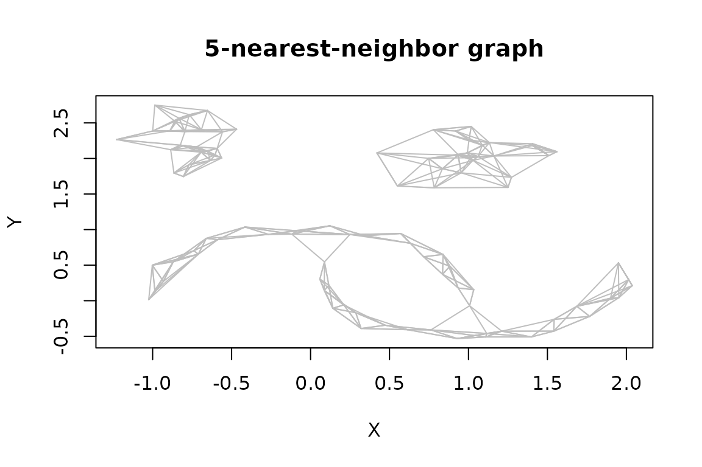
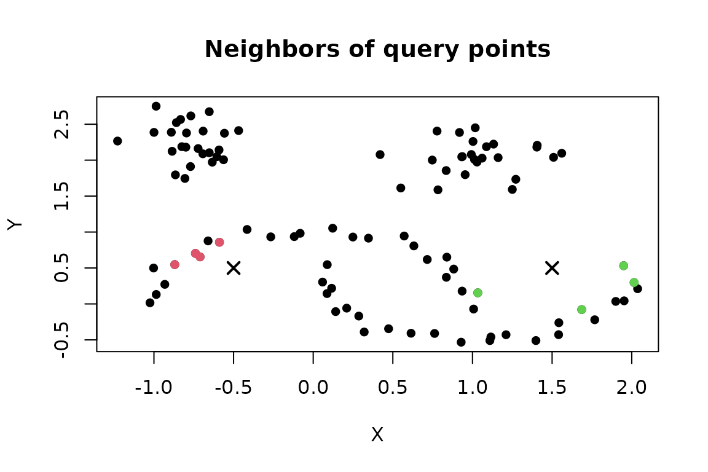
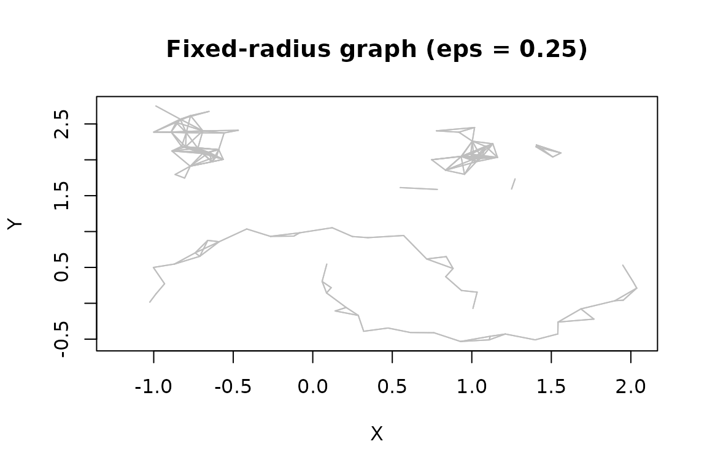
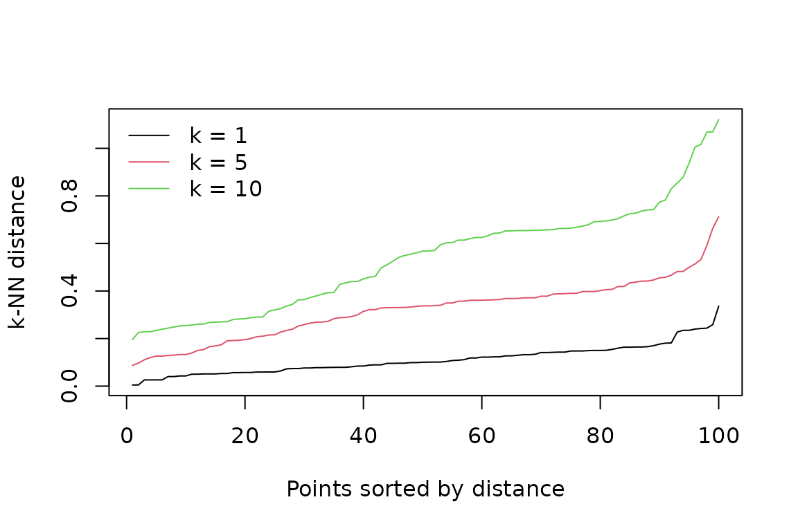
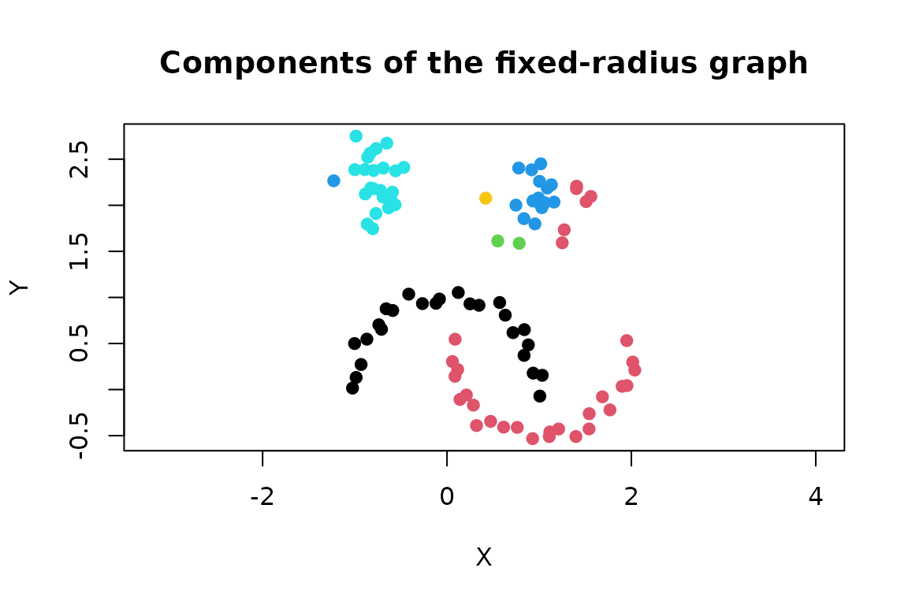

Nearest-neighbor search is the computational foundation for the
clustering and outlier-detection algorithms in dbscan.
Many algorithms define neighborhoods using a minPts
parameter. The neighborhood typically includes the point at the center
as well, while kNN algorithms do not it in k.
Therefore, we have k = minPts - 1 when we go from
clustering to kNN search.
The package exposes kNN search algorithms and resulting
graphs directly:
| Function | Neighborhood | Result structure |
|---|---|---|
kNN() |
The k closest observations |
Matrices of neighbor IDs and distances |
frNN() |
All observations no farther than eps
|
Lists of neighbor IDs and distances |
sNN() |
Similarity based on shared nearest neighbors | Matrices of IDs, distances, and shared-neighbor counts |
kNNdist() |
Distance to the kth nearest neighbor | Numeric vector, or a distance matrix for several neighbors |
kNNdistplot() |
Sorted kth-neighbor distances | Diagnostic plot |
Objects returned by the first three functions inherit from class
NN. They support print(), sort(),
plot(), adjacencylist(), and
comps() for finding connected components.
Nearest neighbor search is optimized for Euclidean distance where it used kd-tree implemented in the ANN library (Mount and Arya, 2010).
Example data
We use the two-dimensional moons data included with the
package. Row names make it easier to follow neighbor IDs in the
output.
data("moons")
x <- as.matrix(moons)
rownames(x) <- paste0("p", seq_len(nrow(x)))
plot(x, pch = 19, asp = 1, main = "Moons data")
For a numeric matrix or data frame, the functions use Euclidean distance. Variable scales therefore determine which observations are considered close. Standardize variables when their units are not comparable and equal weighting is appropriate for the application.
k nearest neighbors
kNN() finds exactly k neighbors for every
observation. Self-matches are removed when searching the rows of
x against themselves.
knn5 <- kNN(x, k = 5)
knn5
#> k-nearest neighbors for 100 objects (k=5).
#> Distance metric: euclidean
#>
#> Available fields: dist, id, k, sort, metric
head(knn5$id)
#> 1 2 3 4 5
#> p1 28 35 24 22 34
#> p2 25 16 49 38 18
#> p3 43 15 5 7 50
#> p4 7 33 17 15 26
#> p5 3 43 50 15 23
#> p6 11 29 31 8 24
head(knn5$dist)
#> 1 2 3 4 5
#> p1 0.18067805 0.2482587 0.2919872 0.3124803 0.3374657
#> p2 0.10363167 0.1625177 0.2437245 0.3933766 0.4192075
#> p3 0.05012376 0.1300946 0.1817009 0.2890157 0.3611383
#> p4 0.16447171 0.1658502 0.3071653 0.3301279 0.3780511
#> p5 0.18170087 0.2001416 0.2066729 0.3003437 0.3385849
#> p6 0.14116165 0.1917604 0.2031767 0.2820457 0.3904264Rows correspond to observations in x, and columns are
ordered from nearest to farthest when sort = TRUE, the
default. IDs are row positions in x; row names are retained
as matrix row names. For example, the neighbors and distances for
observation 10 are:
i <- 10
data.frame(
id = knn5$id[i, ],
row_name = rownames(x)[knn5$id[i, ]],
distance = knn5$dist[i, ]
)
#> id row_name distance
#> 1 23 p23 0.1543851
#> 2 30 p30 0.1596991
#> 3 45 p45 0.2567342
#> 4 50 p50 0.2962318
#> 5 38 p38 0.3887138A kNN object represents a directed graph: observation
j can be among the nearest neighbors of i
without i being among the nearest neighbors of
j. adjacencylist() returns the graph as a list
of integer vectors.
knn_adj <- adjacencylist(knn5)
knn_adj[1:3]
#> [[1]]
#> 1 2 3 4 5
#> 28 35 24 22 34
#>
#> [[2]]
#> 1 2 3 4 5
#> 25 16 49 38 18
#>
#> [[3]]
#> 1 2 3 4 5
#> 43 15 5 7 50The graph can be plotted for small, low-dimensional data. The first two data columns are used as coordinates.
plot(knn5, x, pch = 19, main = "5-nearest-neighbor graph")
Reuse and reduce a search
A stored search can be reduced without rebuilding the kd-tree. This
is useful when an analysis needs several values of k:
calculate the largest required neighborhood once and retain its leading
columns.
knn10 <- kNN(x, k = 10)
knn3 <- kNN(knn10, k = 3)
c(stored = knn10$k, reduced = knn3$k)
#> stored reduced
#> 10 3
head(knn3$id)
#> 1 2 3
#> p1 28 35 24
#> p2 25 16 49
#> p3 43 15 5
#> p4 7 33 17
#> p5 3 43 50
#> p6 11 29 31The requested k cannot exceed the number stored in the
input object. A new search is required to enlarge it.
Query new points
Use query to find neighbors in reference data
x for a different set of points. The output has one row per
query point, and neighbor IDs still refer to rows of x.
query <- rbind(
left = c(-0.5, 0.5),
right = c(1.5, 0.5)
)
query_knn <- kNN(x, k = 4, query = query)
query_knn$id
#> 1 2 3 4
#> left 29 31 35 6
#> right 12 20 48 26
query_knn$dist
#> 1 2 3 4
#> left 0.2610225 0.3140678 0.3690005 0.3723229
#> right 0.4504389 0.5530469 0.5804156 0.6075881Plotting a query result colors the reference observations selected for each query. The query points are added as crosses.
plot(query_knn, x, col = "grey70", main = "Neighbors of query points")
points(query, pch = 4, lwd = 2, cex = 1.3)
Self-matches are not automatically removed in query mode. Thus, if a query row is identical to a reference row, that reference observation can be returned at distance zero.
Fixed-radius nearest neighbors
frNN() finds every observation within radius
eps. Since neighborhood sizes vary, IDs and distances are
stored as parallel lists rather than matrices. Self-matches are
excluded.
fr <- frNN(x, eps = 0.25)
fr
#> fixed radius nearest neighbors for 100 objects (eps=0.25).
#> Distance metric: euclidean
#>
#> Available fields: dist, id, eps, metric, sort
fr$id[1:3]
#> $p1
#> [1] 28 35
#>
#> $p2
#> [1] 25 16 49
#>
#> $p3
#> [1] 43 15 5
fr$dist[1:3]
#> $p1
#> [1] 0.1806781 0.2482587
#>
#> $p2
#> [1] 0.1036317 0.1625177 0.2437245
#>
#> $p3
#> [1] 0.05012376 0.13009457 0.18170087
summary(lengths(fr$id))
#> Min. 1st Qu. Median Mean 3rd Qu. Max.
#> 0.00 2.00 3.00 4.04 6.00 11.00The adjacency-list representation is already stored in
id, so adjacencylist(fr) returns that list.
Empty integer vectors identify observations with no other point inside
the radius.
identical(adjacencylist(fr), fr$id)
#> [1] TRUE
which(lengths(fr$id) == 0L)
#> p79 p100
#> 79 100Like a kNN graph, a fixed-radius graph can be plotted.
plot(fr, x, pch = 19, main = "Fixed-radius graph (eps = 0.25)")
Reduce a stored radius
A fixed-radius result can be filtered to a smaller radius without repeating the search. Start with the largest radius that later analyses will need.
fr_wide <- frNN(x, eps = 0.30)
fr_small <- frNN(fr_wide, eps = 0.12)
c(wide_edges = sum(lengths(fr_wide$id)),
small_edges = sum(lengths(fr_small$id)))
#> wide_edges small_edges
#> 558 108The new radius cannot exceed the radius stored in the object.
Fixed-radius queries use the same query interface as
kNN().
query_fr <- frNN(x, eps = 0.25, query = query)
data.frame(
query = rownames(query),
neighbors = lengths(query_fr$id)
)
#> query neighbors
#> left left 0
#> right right 0Shared nearest neighbors
sNN() starts with a k-nearest-neighbor search and counts
neighborhood overlap. Each observation is treated as belonging to its
own neighborhood for this calculation. The shared matrix
aligns with id: shared[i, j] is the similarity
between observation i and the neighbor stored in
id[i, j].
snn <- sNN(x, k = 10)
snn
#> shared-nearest neighbors for 100 objects (k=10, kt=NULL).
#> Available fields: dist, id, k, sort, metric, shared, sort_shared
head(snn$id, 3)
#> 1 2 3 4 5 6 7 8 9 10
#> p1 28 22 24 35 29 31 34 6 40 9
#> p2 25 49 16 18 38 45 9 13 22 34
#> p3 5 43 7 15 47 50 4 23 33 10
head(snn$shared, 3)
#> [,1] [,2] [,3] [,4] [,5] [,6] [,7] [,8] [,9] [,10]
#> [1,] 9 8 8 8 7 7 7 6 5 4
#> [2,] 7 7 6 6 6 5 4 4 4 4
#> [3,] 9 9 8 8 7 7 6 6 6 5
table(snn$shared)
#>
#> 0 1 2 3 4 5 6 7 8 9 10
#> 2 7 4 17 41 130 153 177 237 170 62By default, rows are sorted by decreasing shared-neighbor count. Distances and IDs are rearranged with the counts, so the columns are no longer necessarily ordered by Euclidean distance.
Set kt to retain only graph edges with at least that
many shared neighbors. Removed entries are represented by
NA and are omitted by adjacencylist().
snn5 <- sNN(snn, kt = 5)
snn5$id[1:3, ]
#> 1 2 3 4 5 6 7 8 9 10
#> p1 28 22 24 35 29 31 34 6 40 NA
#> p2 25 49 16 18 38 45 NA NA NA NA
#> p3 5 43 7 15 47 50 4 23 33 10
adjacencylist(snn5)[1:3]
#> [[1]]
#> 1 2 3 4 5 6 7 8 9
#> 28 22 24 35 29 31 34 6 40
#>
#> [[2]]
#> 1 2 3 4 5 6
#> 25 49 16 18 38 45
#>
#> [[3]]
#> 1 2 3 4 5 6 7 8 9 10
#> 5 43 7 15 47 50 4 23 33 10With jp = TRUE, an edge receives a nonzero similarity
only when the two observations are in each other’s nearest-neighbor
lists. This mutual-neighbor rule is used by Jarvis–Patrick clustering
and by the package’s SNN clustering implementation.
snn_mutual <- sNN(knn10, k = 10, jp = TRUE)
c(
all_edges = sum(!is.na(snn$id)),
mutual_edges = sum(snn_mutual$shared > 0)
)
#> all_edges mutual_edges
#> 1000 770Passing a precomputed kNN object, as above, avoids
repeating the neighbor search. Shared-neighbor clustering is covered
separately in the vignette("nnclustering") vignette.
Neighbor-distance diagnostics
kNNdist() returns the distance from each observation to
its kth nearest neighbor in original row order.
d5 <- kNNdist(x, k = 5)
head(d5)
#> p1 p2 p3 p4 p5 p6
#> 0.3374657 0.4192075 0.3611383 0.3780511 0.3385849 0.3904264
summary(d5)
#> Min. 1st Qu. Median Mean 3rd Qu. Max.
#> 0.08724 0.22412 0.33747 0.32142 0.39043 0.71178Use all = TRUE to retain the distances to every neighbor
from 1 through k.
d_all <- kNNdist(x, k = 5, all = TRUE)
head(d_all)
#> 1 2 3 4 5
#> p1 0.18067805 0.2482587 0.2919872 0.3124803 0.3374657
#> p2 0.10363167 0.1625177 0.2437245 0.3933766 0.4192075
#> p3 0.05012376 0.1300946 0.1817009 0.2890157 0.3611383
#> p4 0.16447171 0.1658502 0.3071653 0.3301279 0.3780511
#> p5 0.18170087 0.2001416 0.2066729 0.3003437 0.3385849
#> p6 0.14116165 0.1917604 0.2031767 0.2820457 0.3904264kNNdistplot() sorts these values and plots them. A sharp
increase can suggest a range for the DBSCAN radius: points before the
increase have nearby neighbors, while points in the upper tail are
relatively isolated.
kNNdistplot(x, k = 5)Several neighborhood sizes can be compared in one plot.
kNNdistplot(x, k = c(1, 5, 10))
legend("topleft", legend = c("k = 1", "k = 5", "k = 10"),
col = 1:3, lty = 1, bty = "n")
For selecting eps for DBSCAN, minPts can be
supplied instead. DBSCAN counts the point itself, while
kNNdist() excludes it, so
kNNdistplot(x, minPts = 6) uses k = 5.
kNNdistplot(x, minPts = 6)
The knee is a diagnostic, not an automatic parameter estimate. It may be unclear for data containing groups with different densities.
Connected components
comps() finds connected components in an NN
graph. In a kNN graph, mutual = FALSE treats a
one-directional neighbor relation as sufficient for a connection;
mutual = TRUE requires both observations to list each
other.
comp_directed <- comps(knn3, mutual = FALSE)
comp_mutual <- comps(knn3, mutual = TRUE)
c(
components_any_direction = length(unique(comp_directed)),
components_mutual = length(unique(comp_mutual))
)
#> components_any_direction components_mutual
#> 4 16Fixed-radius graphs are symmetric, so no mutual argument
is needed.
fr_comp <- comps(fr)
table(fr_comp)
#> fr_comp
#> 1 2 51 52 53 66 74 79 100
#> 25 25 2 16 24 4 2 1 1
plot(x, col = fr_comp, pch = 19, asp = 1,
main = "Components of the fixed-radius graph")
Thresholded sNN graphs can be handled in the same
way.
comps() also accepts a dist object and a
distance threshold. This is equivalent to components in the
corresponding fixed-radius graph.
Sorting results
Sorting can be skipped during a search and applied later. This can
save time when an algorithm only needs the set of neighbors. For
frNN, sort() orders each list by distance; for
kNN, it orders matrix rows by distance; and for
sNN, it orders rows by decreasing shared-neighbor
count.
fr_unsorted <- frNN(x, eps = 0.25, sort = FALSE)
fr_sorted <- sort(fr_unsorted)
data.frame(
id = fr_sorted$id[[1]],
distance = fr_sorted$dist[[1]]
)
#> id distance
#> 1 28 0.1806781
#> 2 35 0.2482587Setting decreasing = TRUE reverses the normal distance
order for kNN and frNN. The default for
sNN is already decreasing similarity.
Using non-Euclidean distances
Supplying a dist object allows kNN(),
frNN(), and sNN() to use another dissimilarity
measure. However, this means that the efficient kd-tree implementation
cannot be used.
d_manhattan <- dist(x, method = "manhattan")
knn_manhattan <- kNN(d_manhattan, k = 5)
fr_manhattan <- frNN(d_manhattan, eps = 0.25)
snn_manhattan <- sNN(d_manhattan, k = 10)
c(
knn_metric = knn_manhattan$metric,
frnn_metric = fr_manhattan$metric,
snn_metric = snn_manhattan$metric
)
#> knn_metric frnn_metric snn_metric
#> "manhattan" "manhattan" "manhattan"A dist object stores all pairwise dissimilarities and
therefore requires quadratic memory. It also cannot be used with
separate query points. Check that the selected dissimilarity,
transformations, and variable weights are meaningful for the
application.
Search strategies and performance
For numeric data, the search argument offers three
strategies:
-
"kdtree", the default, builds a kd-tree and is typically the best starting point for low- or moderate-dimensional data; -
"linear"checks the observations without building a tree; and -
"dist"first calculates all pairwise Euclidean distances.
The strategies should agree apart from the selection of tied observations.
knn_tree <- kNN(x, k = 5, search = "kdtree")
knn_linear <- kNN(x, k = 5, search = "linear")
knn_dist <- kNN(x, k = 5, search = "dist")
c(
tree_vs_linear = isTRUE(all.equal(knn_tree$dist, knn_linear$dist)),
tree_vs_dist = isTRUE(all.equal(knn_tree$dist, knn_dist$dist))
)
#> tree_vs_linear tree_vs_dist
#> TRUE TRUEbucketSize and splitRule control
construction of the kd-tree. Their defaults are appropriate for most
uses. Setting approx above zero enables approximate search,
which can improve speed at the cost of omitting some true neighbors.
Assess the effect on the downstream analysis before using it.
Kd-trees generally become less effective as dimensionality grows. Linear search, an application-specific dimension reduction, or a different distance representation may be preferable in high-dimensional settings.
Important details
- Input data and query points must be numeric and finite for kd-tree and linear search.
- A search of
xagainst itself excludes self-matches; query searches do not. -
kNN()returns exactlykobservations. If multiple candidates tie at the kth distance, one is retained and the others are omitted. -
frNN()returns every observation withineps, so neighborhood sizes can differ and may be zero. - IDs always refer to row positions in the reference data. Preserve a separate stable identifier if rows may later be reordered.
Reference
Mount, D. M. and Arya, S. (2010). ANN: A Library for Approximate Nearest Neighbor Searching. ANN project page.